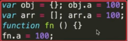
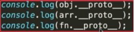
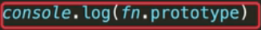
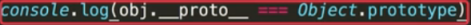
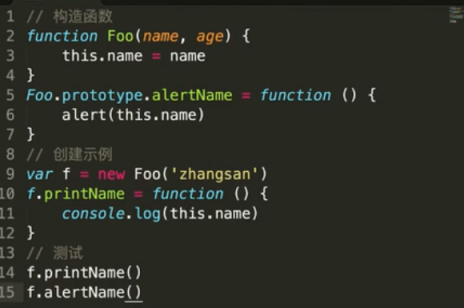
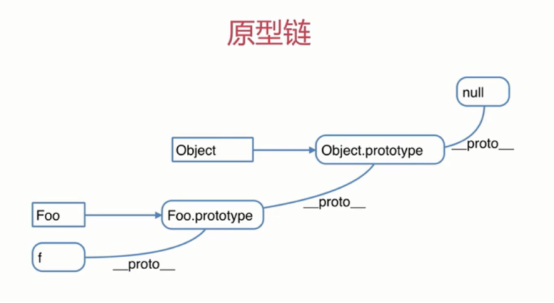

先铺垫下原型规则：
1.所有的引用类型（数组，对象，函数）都具有对象特性，可自由扩展属性（出了null外）

2.所有的引用类型（数组，对象，函数）都有一个__proto__属性（隐式原型），属性值是一个对象

3.所有的函数都有一个prototype属性（显示原型），属性值是一个对象

4.所有的引用类型（数组，对象，函数），__protot__属性值指向他的构造函数的prototype属性值（new出来对象自身的(__protot__)隐式原型就是他构造函数的(prototype)显示原型）

5.当试图去得到一个对象的某个属性时，如果这个对象本身没有这个属性，那么会去他的__proto__(即他的构造函数的prototype)中寻找
看例子：

例子中new出来的f对象是只有name属性（第3行创建的）和printName方法（第10行创建的），第15行中调用f.alertName.而alertName直接在f对象本身中是没有的，那么会去他的__proto__(即他的构造函数Foo的prototype)中寻找（在第5行）
这就引出了原型链

当我们访问对象的一个属性或方法时，它会先在对象自身中寻找，如果有则直接使用，
如果没有则会去原型对象中寻找，一直往上找（像冒泡一样），浏览器防止无限循环，找到最上层就是object了（祖先），再往上找就是null
拓展：
使用hasOwnProperty()方法来检查该属性是new出实例对象自身中含有的还是在原型中含有的，当对象自身中含有属性时，会返回true，
对比in，使用in检查对象中是否含有某个属性时，如果对象中没有但是原型中有，也会返回true，所以hasOwnProperty()更严格，